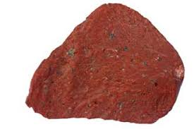
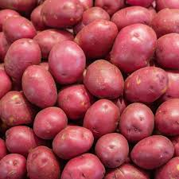

Nom du mets
Description du mets
Photo du mets
La roche rouge
Elle sont trée dure est difficile a manger.

Les patate rouge

Le mars rover

Mars, la « planète rouge », est la 4e planète du système solaire, caractérisée par sa surface désertique et rocheuse, riche en oxyde
de fer qui lui donne sa couleur. Plus petite que la Terre, elle possède deux petites lunes (Phobos et Deimos), une atmosphère très fine
composée de 95% de CO2 et des températures glaciales, avec une moyenne de -63C.

Nom du mets |
Description du mets |
Photo du mets |
La roche rouge |
La roche rouge est de la nourriture traditionnelle sur mars.
Elle sont trée dure est difficile a manger. |
 |
Les patate rouge |
La pomme de terre rouge est une plante herbacée de la famille des Solanacées. |  |
Le mars rover |
Le mars rover a une saveur métallique et est très coûteux. | |